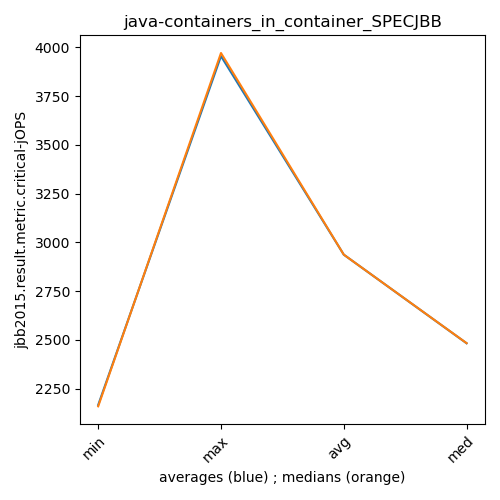

java- SPECJBB
Context at bottom
/home/jvanek/git/benchmarks-in-nested-virtualisation-toolchain/final_results/containers_in_container_results/containers_in_container_DACAPO
java-
SPECJBB
/home/jvanek/git/benchmarks-in-nested-virtualisation-toolchain/final_results/containers_in_container_results/containers_in_container_JMH
java-
SPECJBB
/home/jvanek/git/benchmarks-in-nested-virtualisation-toolchain/final_results/containers_in_container_results/containers_in_container_SPECJBB
java-
SPECJBB
containers_in_container_SPECJBB
- containers_in_container_SPECJBB - max-jops
- containers_in_container_SPECJBB - critical jops
containers_in_container_SPECJBB - max-jops
Expected number of java- JDKs: 37
1st avgmed_alljdks_metric:
/home/jvanek/git/benchmarks-in-nested-virtualisation-toolchain/final_results/result_processing.py /home/jvanek/git/benchmarks-in-nested-virtualisation-toolchain/final_results/containers_in_container_results/containers_in_container_SPECJBB jbb2015.result.metric.max-jOPS False
values: [11070, 10793, 10931, 11208, 11070, 10793, 11070, 10931, 10654, 11208, 10931, 11070, 11070, 11208, 10793, 10931, 10931, 10793, 11070, 10931, 10931, 11070, 9271, 11070, 11070, 10931, 11208, 11070, 11208, 10931, 10793, 10793, 10793, 11070, 10654, 10931, 10654, 10793, 10624, 10654, 10793, 10931, 10931, 10793, 10793, 10793, 10654, 10793, 10654, 10793, 8612, 9305, 8711, 8869, 9037, 9107, 9096, 8910, 9305, 9037, 8711, 9008, 8909, 9206, 8892, 9057, 9173, 8891, 9062, 9107, 9206, 9219, 8869, 8909, 9206, 9008, 9037, 9057, 8909, 9119, 9206, 9037, 8612, 8810, 8711, 8759, 8716, 9107, 8610, 9311, 9206, 9007, 9242, 8892, 8998, 9606, 9585, 10047, 9931, 10047, 9931, 9700, 9816, 9816, 9931, 9585, 9816, 9641, 9653, 9816, 9686, 9931, 10162, 9748, 9931, 9816, 9931, 9855, 9700, 9816, 9641, 9641, 9653, 9700, 9534, 9858, 9534, 9550, 9550, 9855, 9700, 9354, 9756, 9700, 9931, 9700, 9641, 9585, 9700, 9585, 9700, 9816, 9700, 10047, 9700, 9931, 9816, 9585, 9963, 9816, 9931, 9931, 9700, 9816, 9816, 9585, 9931, 9931, 9585, 9816, 9585, 9816, 9816, 9816, 9700, 9816, 9469, 9354, 9816, 9816, 10047, 9816, 9816, 9931, 9931]

Expected number of iterations: 5
final number of values: 175 out of 185
Pass rate: 94.6%
values: (8610, 11208, 9885.697142857143, 9816)

** accuracy from all jdks and runs
more is better
MIN: 8610
MAX: 11208
AVG: 9885.697142857143
MED: 9816
Relative differences 1:
MIN-MAX: 23.0 %
MIN-AVG: 13.0 %
MIN-MED: 12.0 %
MAX-MIN: -30.0 %
MAX-AVG: -13.0 %
MAX-MED: -14.0 %
AVG-MED: -1.0 %
stored to java-.properties. sort | uniq that!
2nd avgmed_by_jdk_metric:
values: [11014.4, 10931.2, 11014.4, 10931.2, 10682.4, 11069.6, 10820.6, 10731.2, 10848.2, 10737.4, 8906.8, 9091.0, 8945.2, 9058.0, 9081.8, 9026.0, 8875.2, 8900.6, 9069.0, 9843.2, 9838.8, 9702.2, 9891.6, 9823.6, 9633.8, 9669.4, 9688.2, 9642.2, 9792.6, 9822.2, 9838.8, 9769.6, 9746.6, 9654.2, 9908.2]

values: [11070, 10931, 11070, 10931, 11070, 11070, 10793, 10654, 10793, 10793, 8869, 9096, 8909, 9062, 9206, 9037, 8810, 8759, 9007, 9931, 9816, 9653, 9931, 9816, 9641, 9550, 9700, 9641, 9700, 9816, 9816, 9816, 9816, 9816, 9931]

values: (8875.2, 11069.6, 9885.697142857143, 9792.6)
values: (8759, 11070, 9894.857142857143, 9816)

** accuracy from all jdks where runs were avged
more is better
MIN: 8875.2
MAX: 11069.6
AVG: 9885.697142857143
MED: 9792.6
Relative differences 1:
MIN-MAX: 20.0 %
MIN-AVG: 10.0 %
MIN-MED: 9.0 %
MAX-MIN: -25.0 %
MAX-AVG: -12.0 %
MAX-MED: -13.0 %
AVG-MED: -1.0 %
stored to java-.properties. sort | uniq that!
** accuracy from all jdks where runs were medianed
more is better
MIN: 8759
MAX: 11070
AVG: 9894.857142857143
MED: 9816
Relative differences 1:
MIN-MAX: 21.0 %
MIN-AVG: 11.0 %
MIN-MED: 11.0 %
MAX-MIN: -26.0 %
MAX-AVG: -12.0 %
MAX-MED: -13.0 %
AVG-MED: -1.0 %
stored to java-.properties. sort | uniq that!
containers_in_container_SPECJBB - critical jops
Expected number of java- JDKs: 37
1st avgmed_alljdks_metric:
/home/jvanek/git/benchmarks-in-nested-virtualisation-toolchain/final_results/result_processing.py /home/jvanek/git/benchmarks-in-nested-virtualisation-toolchain/final_results/containers_in_container_results/containers_in_container_SPECJBB jbb2015.result.metric.critical-jOPS False
values: [2300, 2049, 2352, 2417, 2315, 2433, 2014, 2089, 2428, 2381, 2143, 2483, 2405, 2489, 2668, 2174, 2214, 2362, 2366, 2233, 2182, 2420, 2315, 2392, 2063, 2348, 2485, 2355, 2200, 2113, 2487, 2221, 2392, 2314, 2418, 2139, 2321, 2256, 2227, 2540, 2302, 2297, 2379, 2335, 2178, 2388, 2328, 2537, 2490, 2259, 2289, 2382, 2213, 2193, 2292, 2010, 2339, 2097, 2399, 2159, 2053, 1847, 2233, 2459, 2238, 2273, 2413, 2240, 2381, 2086, 2361, 2348, 2349, 2352, 2278, 2600, 2424, 2515, 2415, 2458, 2433, 2253, 2582, 2506, 2399, 2357, 2543, 2819, 2622, 2603, 2619, 2450, 2272, 2582, 2471, 3366, 3417, 3419, 3443, 3655, 3502, 3443, 3510, 3373, 3536, 3397, 3632, 3374, 3497, 3379, 3499, 3634, 3544, 3497, 3482, 3523, 3581, 3595, 3528, 3659, 3372, 3455, 3372, 3521, 3289, 3306, 3426, 3316, 3364, 3379, 3411, 3588, 3549, 3324, 3448, 3549, 3482, 3584, 3442, 3401, 4039, 3971, 3918, 3997, 3849, 3765, 3908, 3819, 3896, 3815, 3942, 3965, 3909, 3896, 3796, 3859, 4006, 3882, 3818, 3934, 3849, 3932, 3801, 3827, 3809, 3972, 3824, 3780, 3860, 3818, 3983, 3763, 3814, 3848, 3813]
Expected number of iterations: 5
final number of values: 175 out of 185
Pass rate: 94.6%
values: (1847, 4039, 2936.8171428571427, 2582)

** accuracy from all jdks and runs
more is better
MIN: 1847
MAX: 4039
AVG: 2936.8171428571427
MED: 2582
Relative differences 1:
MIN-MAX: 54.0 %
MIN-AVG: 37.0 %
MIN-MED: 28.0 %
MAX-MIN: -119.0 %
MAX-AVG: -38.0 %
MAX-MED: -56.0 %
AVG-MED: -14.0 %
stored to java-.properties. sort | uniq that!
2nd avgmed_by_jdk_metric:
values: [2286.6, 2269.0, 2437.6, 2269.8, 2274.4, 2300.2, 2366.4, 2296.6, 2298.2, 2400.4, 2273.8, 2200.8, 2166.0, 2278.6, 2337.6, 2482.4, 2434.6, 2588.8, 2478.8, 3460.0, 3472.8, 3455.8, 3531.2, 3577.2, 3401.8, 3358.2, 3464.0, 3491.6, 3954.8, 3840.6, 3901.6, 3899.8, 3843.6, 3850.8, 3844.2]

values: [2315, 2381, 2483, 2233, 2315, 2348, 2392, 2256, 2302, 2388, 2289, 2159, 2233, 2273, 2349, 2458, 2433, 2603, 2471, 3419, 3502, 3397, 3499, 3581, 3372, 3364, 3448, 3482, 3971, 3819, 3909, 3882, 3827, 3824, 3814]

values: (2166.0, 3954.8, 2936.817142857143, 2482.4)
values: (2159, 3971, 2936.885714285714, 2483)

** accuracy from all jdks where runs were avged
more is better
MIN: 2166.0
MAX: 3954.8
AVG: 2936.817142857143
MED: 2482.4
Relative differences 1:
MIN-MAX: 45.0 %
MIN-AVG: 26.0 %
MIN-MED: 13.0 %
MAX-MIN: -83.0 %
MAX-AVG: -35.0 %
MAX-MED: -59.0 %
AVG-MED: -18.0 %
stored to java-.properties. sort | uniq that!
** accuracy from all jdks where runs were medianed
more is better
MIN: 2159
MAX: 3971
AVG: 2936.885714285714
MED: 2483
Relative differences 1:
MIN-MAX: 46.0 %
MIN-AVG: 26.0 %
MIN-MED: 13.0 %
MAX-MIN: -84.0 %
MAX-AVG: -35.0 %
MAX-MED: -60.0 %
AVG-MED: -18.0 %
stored to java-.properties. sort | uniq that!
/home/jvanek/git/benchmarks-in-nested-virtualisation-toolchain/final_results/containers_in_container_results/containers_in_container_RADARGUNs1
java-
SPECJBB
/home/jvanek/git/benchmarks-in-nested-virtualisation-toolchain/final_results/containers_in_container_results/containers_in_container_J2DBENCH
java-
SPECJBB
/home/jvanek/git/benchmarks-in-nested-virtualisation-toolchain/final_results/containers_in_container_results/containers_in_container_RADARGUNs3
java-
SPECJBB
pass rates:
containers_in_container_SPECJBB=94.6%
Context:
- containers_in_container_results
- SPECJBB